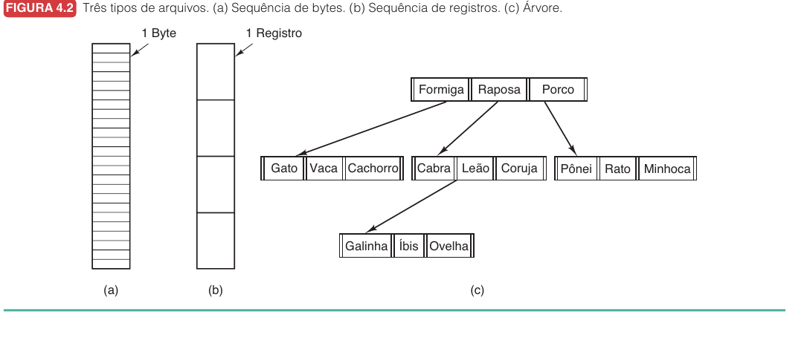
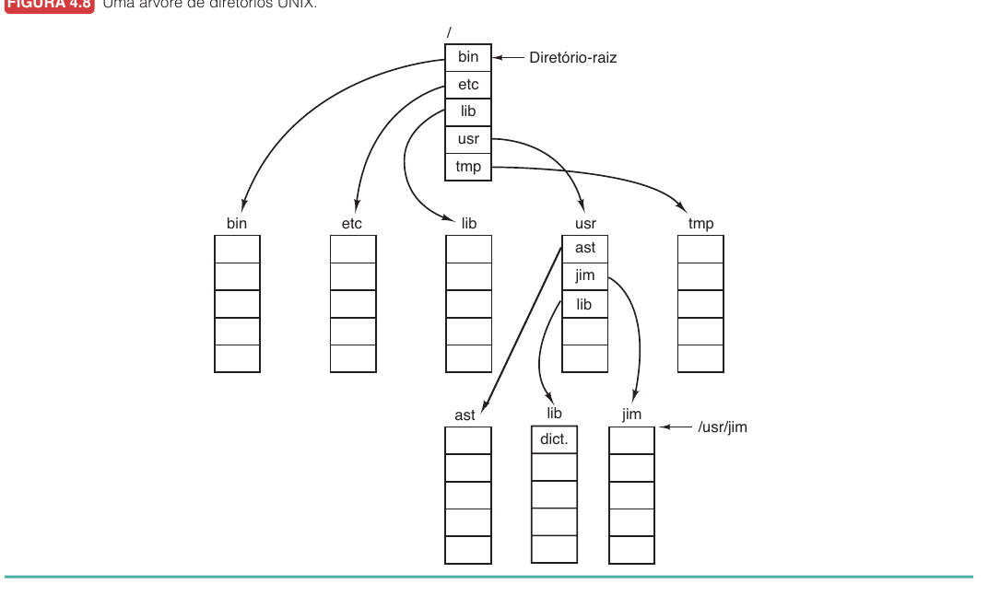
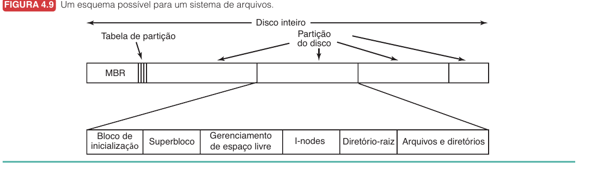
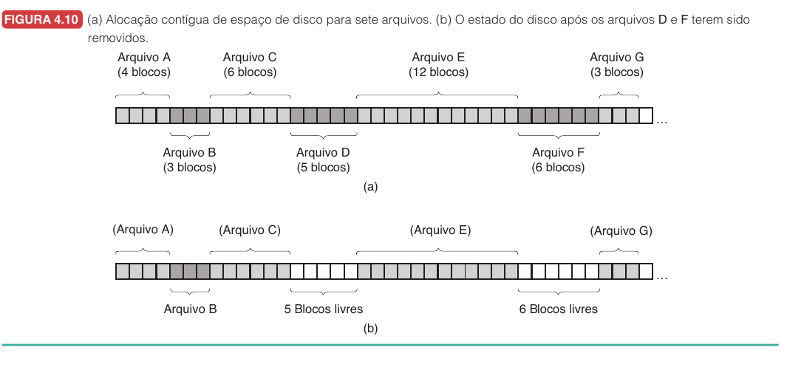
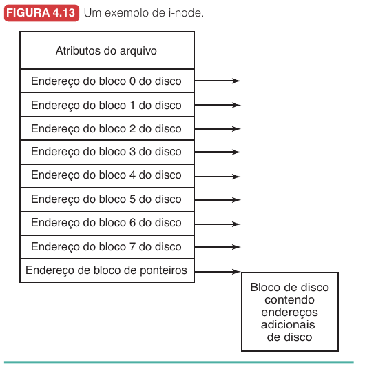
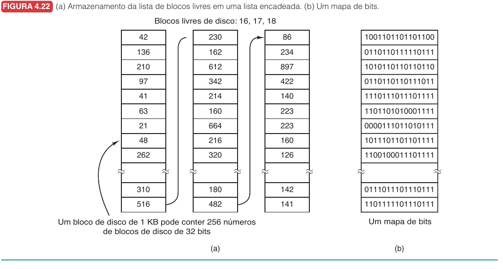
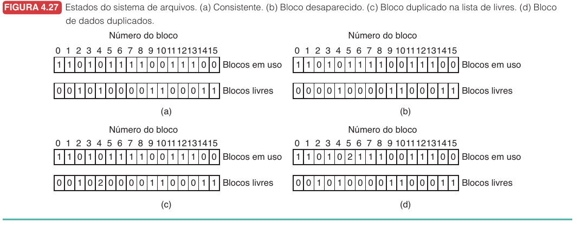
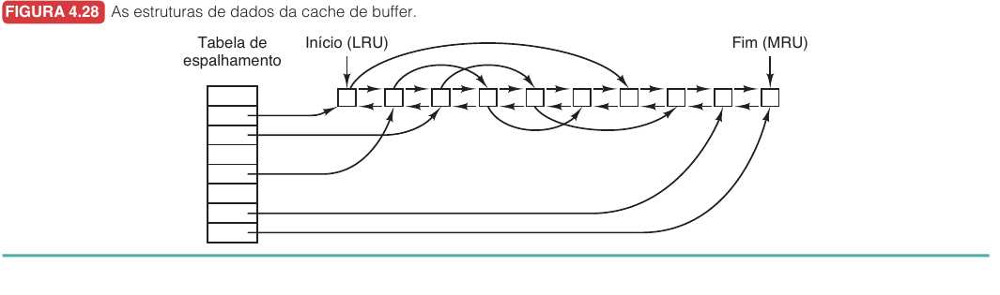
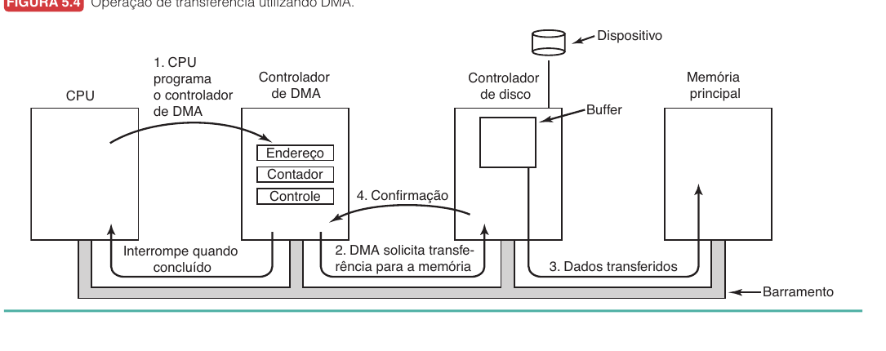
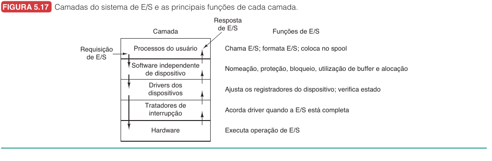

Introdução10.1
Hoje veremos como o sistema operacional transforma blocos crus de armazenamento e dispositivos lentos em uma interface que parece simples: arquivos, diretórios, read, write, open, close e operações de entrada e saída.
Na aula anterior, vimos que a memória virtual cria uma ilusão poderosa. Cada processo acredita ter um espaço grande, contínuo e privado, mesmo que a RAM real seja limitada e compartilhada. Agora aparece um problema diferente. A memória do processo desaparece quando o processo termina, mas muitos dados precisam sobreviver por dias, meses ou anos.
O problema central desta aula é este: como armazenar informações de forma persistente, encontrável, compartilhável e eficiente, mesmo quando o hardware real só entende blocos, controladores, interrupções e erros?
Esta aula usa como base o Tanenbaum, capítulo 4, seções 4.1 a 4.4, e capítulo 5, seções 5.1 a 5.3. A progressão será: primeiro veremos a interface de arquivos e diretórios, depois como essa interface é implementada no disco, em seguida como o sistema tenta manter consistência e desempenho, e por fim como tudo isso depende do subsistema de E/S.
Quando você salva um arquivo chamado relatorio.txt, o que exatamente precisa ser lembrado pelo sistema? O nome do arquivo basta, ou o sistema também precisa registrar onde estão os bytes, quem pode acessá-los, quando foram alterados e quais blocos ainda estão livres?
Arquivos como abstração persistente10.2
Um arquivo é uma unidade lógica de informação criada por processos e gerenciada pelo sistema operacional. Ele permite guardar dados em um dispositivo de armazenamento sem obrigar o programa a lidar diretamente com cilindros, setores, blocos físicos, controladores ou temporização de hardware.
Essa abstração atende a três necessidades que a memória principal não resolve sozinha.
| Necessidade | Por que importa |
|---|---|
| Armazenar muita informação | O espaço de endereçamento de um processo não é o lugar certo para guardar todos os dados de uma aplicação. |
| Sobreviver ao processo | O arquivo continua existindo depois que o processo que o criou termina. |
| Permitir compartilhamento | Vários processos podem acessar a mesma informação usando uma interface comum. |
Do ponto de vista de quem programa, o arquivo parece um objeto com nome, conteúdo e operações. Do ponto de vista do sistema operacional, ele também tem metadados, blocos associados, permissões e relação com algum diretório.
Nomes, extensões e tipos10.2.1
Quando um processo cria um arquivo, ele dá um nome a esse arquivo. Depois que o processo termina, o arquivo pode continuar existindo e ser acessado por outros processos usando esse nome.
As regras exatas variam entre sistemas. Alguns distinguem maiúsculas e minúsculas, como UNIX e Linux. Outros historicamente não distinguiam, como MS-DOS. Muitos sistemas usam extensões, como .c, .txt, .jpg e .pdf, para indicar uma convenção sobre o conteúdo do arquivo.
Há uma diferença importante aqui. Em sistemas como UNIX, a extensão costuma ser convenção. Um arquivo chamado dados.txt não é magicamente obrigado pelo kernel a conter texto. Já em ambientes gráficos, como Windows, a extensão frequentemente é usada para escolher qual programa será aberto quando o usuário clica no arquivo.
Um nome como foto.jpg sugere uma imagem JPEG, mas o sistema de arquivos pode não verificar isso. O conteúdo real é determinado pelos bytes armazenados e pelo programa que tenta interpretá-los.
Estrutura interna dos arquivos10.2.2
Tanenbaum apresenta três formas clássicas de enxergar a estrutura de um arquivo.

| Estrutura | Ideia | Onde aparece |
|---|---|---|
| Sequência de bytes | O sistema não interpreta o conteúdo. Ele apenas armazena bytes. | UNIX, Linux, Windows modernos. |
| Sequência de registros | O arquivo é lido e escrito em unidades de registro. | Sistemas antigos de grande porte. |
| Árvore de registros | Registros são buscados por chave, não apenas por posição. | Sistemas voltados a processamento comercial. |
A opção mais flexível é a sequência de bytes. Nesse modelo, o sistema operacional enxerga o arquivo como uma sequência linear de bytes numerados: byte 0, byte 1, byte 2, e assim por diante. Ele não tenta entender se esses bytes representam texto, imagem, banco de dados, vídeo ou código executável. Essa decisão fica para os programas de usuário.
Na sequência de registros, o sistema operacional já reconhece uma unidade lógica maior que o byte: o registro. Em vez de apenas ler "os próximos 200 bytes", o programa pode ler "o próximo registro". Isso fazia sentido em sistemas nos quais arquivos eram compostos por entradas de tamanho fixo ou por registros com estrutura conhecida, como cadastros comerciais. A diferença para a sequência de bytes é que, nesse modelo, o sistema sabe que existem fronteiras entre registros; no modelo de bytes, essas fronteiras só existem se o programa decidir interpretá-las.
Na árvore de registros, a organização vai além da ordem linear. Cada registro possui uma chave, e o arquivo é estruturado para permitir busca por essa chave. Em vez de percorrer registros em sequência até encontrar um cliente, por exemplo, o sistema pode navegar por uma árvore e localizar diretamente o registro desejado. A diferença para a sequência de registros é que a sequência preserva uma ordem simples de leitura, enquanto a árvore adiciona uma estrutura de busca dentro do próprio arquivo.
Essa flexibilidade da sequência de bytes é uma vantagem porque permite usos inesperados. O sistema não precisa ser alterado toda vez que surge um novo formato de arquivo. A desvantagem é que o sistema também ajuda menos. Se um programa interpreta bytes errados como se fossem uma imagem ou um executável, o erro precisa ser tratado em outro nível.
Acesso sequencial e acesso aleatório10.2.3
Os primeiros sistemas operacionais ofereciam principalmente acesso sequencial. O processo lia o arquivo em ordem, do início para o fim. Essa ideia combinava bem com fitas magnéticas, nas quais avançar até uma posição distante era naturalmente caro.
Com discos, passou a ser possível acessar partes diferentes do arquivo fora de ordem. Esse é o acesso aleatório. Ele é essencial para bancos de dados, sistemas de reservas, índices e qualquer aplicação que precise saltar diretamente para um registro específico.
| Tipo de acesso | Como funciona | Exemplo |
|---|---|---|
| Sequencial | Lê ou escreve na ordem atual do arquivo. | Processar um arquivo de log linha por linha. |
| Aleatório | Move a posição atual e lê ou escreve dali. | Buscar o registro de um cliente em uma base de dados. |
Em sistemas como UNIX e Windows, o acesso aleatório costuma aparecer por meio de uma operação como seek, que altera a posição atual do arquivo. Depois disso, as próximas leituras ou escritas partem da nova posição.
Atributos e operações10.2.4
Além do conteúdo, arquivos têm atributos. Esses atributos são metadados, ou seja, informações sobre o arquivo.
| Atributo | O que representa |
|---|---|
| Proteção | Quem pode ler, escrever ou executar. |
| Proprietário | Usuário responsável pelo arquivo. |
| Tamanho | Quantidade atual de bytes. |
| Tempos | Criação, último acesso e última modificação. |
| Flags | Somente leitura, oculto, temporário, sistema e outros. |
As operações mais comuns são create, delete, open, close, read, write, append, seek, get attributes, set attributes e rename.
open merece atenção. Abrir um arquivo não significa necessariamente ler seus dados naquele instante. Significa preparar o sistema para acessos futuros. O sistema localiza o arquivo, carrega metadados relevantes, cria uma entrada interna e devolve ao processo um descritor de arquivo.
Imagine um programa que copia entrada.txt para saida.txt.
O comportamento conceitual é:
abrir entrada.txt para leitura
criar saida.txt para escrita
enquanto houver bytes na entrada:
ler um bloco da entrada
escrever esse bloco na saída
fechar os dois arquivos
O ponto importante é que o programa não precisa saber onde estão os blocos físicos de entrada.txt. Ele pede bytes ao sistema operacional. O sistema de arquivos converte essa operação em leituras de blocos, uso de cache, chamadas ao driver e operações de E/S.
Diretórios transformam nomes em localização10.3
Um sistema com milhares de arquivos não pode deixar tudo em uma única lista plana. Diretórios organizam nomes e permitem agrupar arquivos relacionados.
Tecnicamente, um diretório é uma estrutura gerenciada pelo sistema de arquivos que associa nomes a informações necessárias para localizar o arquivo. Dependendo do sistema, essa informação pode ser o primeiro bloco do arquivo, um conjunto de atributos ou o número de um i-node.
Diretórios hierárquicos10.3.1
Sistemas modernos usam diretórios hierárquicos, formando uma árvore. Isso permite que cada usuário, aplicação ou projeto tenha sua própria organização interna.

Em uma árvore de diretórios, um arquivo pode ser identificado por um caminho absoluto ou relativo.
| Tipo de caminho | Ideia | Exemplo |
|---|---|---|
| Absoluto | Começa na raiz do sistema de arquivos. | /usr/ast/caixapostal |
| Relativo | Começa no diretório de trabalho atual. | caixapostal |
O diretório de trabalho é o ponto de referência usado por caminhos relativos. Se o diretório atual é /usr/ast, então caixapostal e /usr/ast/caixapostal apontam para o mesmo arquivo.
Dois nomes especiais aparecem em muitos sistemas.
| Nome | Significado |
|---|---|
. |
O diretório atual. |
.. |
O diretório pai. |
Assim, se o diretório atual é /usr/ast, o caminho ../lib/dictionary sobe para /usr e depois desce para /usr/lib/dictionary.
Se dois processos têm diretórios de trabalho diferentes e ambos abrem config.txt, eles necessariamente abrem o mesmo arquivo? O que teria de ser igual para isso acontecer?
Operações com diretórios10.3.2
As operações com diretórios lembram operações com arquivos, mas o objetivo é gerenciar nomes e organização.
| Operação | Função |
|---|---|
create |
Cria um diretório vazio. |
delete |
Remove um diretório, geralmente apenas se estiver vazio. |
opendir |
Abre um diretório para leitura. |
readdir |
Retorna a próxima entrada do diretório. |
closedir |
Fecha o diretório. |
rename |
Renomeia uma entrada. |
link |
Faz um arquivo aparecer por outro nome. |
unlink |
Remove uma entrada de diretório. |
Em UNIX, remover um arquivo é conceitualmente remover uma ligação entre um nome de diretório e o arquivo. Por isso a operação se chama unlink.
Links rígidos e simbólicos10.3.3
Quando um arquivo precisa aparecer em mais de um lugar, o sistema pode usar links.
| Tipo | Como funciona | Consequência |
|---|---|---|
| Link rígido | Duas entradas de diretório apontam para a mesma estrutura interna do arquivo. | O arquivo só desaparece quando o último nome é removido. |
| Link simbólico | Um pequeno arquivo guarda o caminho para outro arquivo. | Pode atravessar sistemas de arquivos, mas pode quebrar se o alvo sumir. |
Links rígidos tornam o sistema de arquivos mais parecido com um grafo acíclico do que com uma árvore pura. Isso aumenta a flexibilidade, mas também exige mais cuidado em contagem de referências, backups e remoção.
Um link simbólico pode apontar para um caminho que não existe mais. Nesse caso, o link ainda existe, mas a resolução do caminho falha.
Como arquivos são implementados no disco10.4
Até agora olhamos o sistema de arquivos pelo lado de quem usa. Agora precisamos olhar pelo lado de quem implementa.
O disco pode ser visto, de forma simplificada, como uma sequência de blocos. O sistema de arquivos precisa responder perguntas como estas:
- Quais blocos pertencem a cada arquivo?
- Quais blocos estão livres?
- Onde ficam os metadados?
- Como encontrar o diretório-raiz?
- Como recuperar o sistema após uma queda?
Esquema geral de uma partição10.4.1
Tanenbaum mostra um esquema típico com MBR, bloco de inicialização, superbloco, informação de espaço livre, i-nodes, diretório-raiz e dados.

| Estrutura | Papel |
|---|---|
| MBR | Contém código inicial e tabela de partições do disco. |
| Bloco de inicialização | Carrega o sistema operacional daquela partição, quando aplicável. |
| Superbloco | Guarda parâmetros fundamentais do sistema de arquivos. |
| Gerenciamento de espaço livre | Informa quais blocos ainda podem ser usados. |
| I-nodes | Guardam metadados e endereços dos blocos dos arquivos. |
| Diretório-raiz | Ponto inicial da árvore de diretórios. |
| Arquivos e diretórios | Região principal com dados e estruturas de diretório. |
O superbloco é especialmente importante. Se ele for perdido ou corrompido, o sistema pode perder informações essenciais para interpretar o restante da partição.
Alocação contígua10.4.2
Na alocação contígua, cada arquivo ocupa uma sequência contínua de blocos no disco.

Essa técnica tem duas vantagens claras. Primeiro, é simples. Para localizar o arquivo, basta saber o bloco inicial e o tamanho. Segundo, a leitura sequencial é rápida, porque os blocos estão juntos.
O problema aparece quando arquivos são removidos e criados ao longo do tempo. Surgem lacunas. Um arquivo novo pode não caber em nenhuma lacuna, mesmo que o espaço livre total seja suficiente. Esse é o problema da fragmentação externa.
Além disso, a alocação contígua exige saber antecipadamente o tamanho final do arquivo, ou mover o arquivo quando ele cresce. Para arquivos que mudam constantemente, isso é ruim. Para mídias gravadas de uma vez, como CD-ROMs, a ideia volta a fazer sentido.
Lista encadeada e FAT10.4.3
Outra opção é armazenar o arquivo como uma lista encadeada de blocos. Cada bloco aponta para o próximo. Isso elimina a exigência de blocos contíguos.
A lista encadeada simples tem um problema grave para acesso aleatório. Para chegar ao bloco $n$, é preciso começar no primeiro bloco e seguir ponteiro por ponteiro.
A FAT, File Allocation Table, melhora isso colocando os ponteiros em uma tabela global do sistema de arquivos. Essa tabela tem uma entrada para cada bloco do disco. Se o bloco $4$ aponta para o bloco $7$, essa informação fica na entrada $4$ da FAT. Assim, o encadeamento pode ser seguido sem ler cada bloco de dados no disco. O custo é que a tabela cresce com o tamanho do disco e precisa ficar disponível na memória para funcionar bem.
I-nodes10.4.4
Em sistemas baseados em i-nodes, cada arquivo possui sua própria estrutura de metadados. Essa estrutura guarda atributos do arquivo e os endereços dos blocos que pertencem a ele. Ou seja, em vez de uma tabela global dizer qual é o próximo bloco de todos os arquivos do disco, cada arquivo carrega o seu próprio mapa de blocos.

A vantagem é que o sistema precisa carregar apenas os i-nodes dos arquivos em uso. Se um processo abre três arquivos, o sistema trabalha principalmente com os i-nodes desses três arquivos. Em uma FAT, a estrutura importante é a tabela global do disco, que cresce com o número total de blocos, mesmo que poucos arquivos estejam abertos.
O i-node pode conter alguns ponteiros diretos para blocos de dados e, quando o arquivo cresce, ponteiros para blocos de ponteiros adicionais. Assim, arquivos pequenos são baratos e arquivos grandes continuam possíveis.
Considere um arquivo de três blocos armazenado nos blocos físicos $4$, $7$ e $12$.
Na alocação contígua, esse arquivo não poderia ser representado desse jeito, porque os blocos não estão lado a lado.
Em uma FAT, a tabela poderia registrar:
| Bloco | Próximo |
|---|---|
| $4$ | $7$ |
| $7$ | $12$ |
| $12$ | fim |
Em um i-node, a própria estrutura daquele arquivo poderia guardar a lista de blocos usados por ele:
| Ponteiro do i-node | Bloco apontado |
|---|---|
| direto 1 | $4$ |
| direto 2 | $7$ |
| direto 3 | $12$ |
O que o exemplo mostra é que FAT e i-node aceitam arquivos espalhados. A diferença está em onde fica a estrutura que permite encontrar os blocos do arquivo. Na FAT, a relação entre blocos fica em uma tabela global indexada pelos blocos do disco. No i-node, os endereços dos blocos ficam na estrutura do próprio arquivo.
Isso muda o custo de uso. Para seguir um arquivo na FAT, o sistema consulta uma tabela comum a todos os arquivos. Para seguir um arquivo com i-node, o sistema consulta o i-node daquele arquivo. Por isso i-nodes escalam melhor em discos grandes e combinam bem com a ideia de carregar metadados apenas dos arquivos abertos.
Implementando diretórios10.4.5
Um diretório precisa mapear nomes para a informação que localiza o arquivo.
Há duas estratégias comuns.
| Estratégia | Como funciona |
|---|---|
| Atributos na entrada do diretório | A entrada guarda nome, atributos e endereços de disco. |
| Entrada aponta para i-node | A entrada guarda nome e número do i-node. Os atributos ficam no i-node. |
Com nomes longos e variáveis, há outro problema. Se cada entrada reservar espaço para 255 caracteres, a maioria desperdiçará espaço. Por isso, sistemas reais podem usar entradas de tamanho variável, armazenar nomes em uma área separada ou usar estruturas de busca para acelerar diretórios grandes.
Diretórios pequenos podem ser pesquisados linearmente. Diretórios com milhares de arquivos podem usar tabelas de espalhamento ou caches de busca.
Gerenciamento de espaço em disco10.5
Depois de decidir como representar arquivos, o sistema precisa decidir como dividir e reutilizar o espaço livre.
Tamanho de bloco10.5.1
Quase todos os sistemas dividem arquivos em blocos de tamanho fixo. O tamanho do bloco é uma decisão de projeto importante.
| Bloco pequeno | Bloco grande |
|---|---|
| Desperdiça menos espaço no último bloco de arquivos pequenos. | Reduz a quantidade de blocos por arquivo e melhora a leitura sequencial. |
| Pode exigir mais buscas e mais metadados. | Pode desperdiçar espaço em arquivos pequenos. |
Esse é um conflito clássico entre espaço e tempo. Blocos pequenos economizam espaço, mas podem piorar desempenho. Blocos grandes melhoram transferência, mas aumentam fragmentação interna.
Um servidor com muitos vídeos grandes e um sistema com milhões de arquivos pequenos não têm o mesmo perfil. Decisões de sistemas de arquivos dependem da carga de trabalho esperada.
Lista livre e mapa de bits10.5.2
Para reutilizar espaço, o sistema precisa saber quais blocos estão livres.

| Técnica | Ideia | Vantagem | Custo |
|---|---|---|---|
| Lista encadeada de blocos livres | Blocos livres são listados em estruturas encadeadas. | Pode usar os próprios blocos livres para guardar a lista. | Pode dificultar encontrar blocos próximos. |
| Mapa de bits | Um bit indica se cada bloco está livre ou ocupado. | Compacto e facilita achar sequências próximas. | O mapa precisa ser mantido e consultado. |
O mapa de bits costuma ser mais compacto. Um disco com $n$ blocos precisa de $n$ bits. Já uma lista precisa guardar números de blocos, normalmente com vários bytes por entrada.
Também é possível gerenciar cotas. Em sistemas multiusuário, uma cota limita quantos blocos ou arquivos cada usuário pode consumir. Isso evita que um usuário use todo o disco e prejudique os demais.
Confiabilidade e journaling10.6
Sistemas de arquivos precisam ser rápidos, mas também precisam sobreviver a falhas. O problema é que muitas operações conceitualmente simples exigem várias escritas reais no disco.
Remover um arquivo em um sistema parecido com UNIX pode exigir pelo menos três ações:
- Remover a entrada do diretório.
- Liberar o i-node.
- Liberar os blocos de dados.
Se o sistema cai depois da primeira ação, o arquivo deixa de aparecer no diretório, mas seus blocos podem continuar marcados como ocupados. Se cai depois de liberar blocos, mas antes de remover a entrada do diretório, uma entrada válida pode apontar para blocos que o sistema acredita estarem livres. Isso pode causar corrupção séria.
Verificação de consistência10.6.1
Ferramentas como fsck examinam redundâncias do sistema de arquivos para encontrar inconsistências.

A verificação pode encontrar blocos desaparecidos, blocos duplicados na lista livre e blocos de dados atribuídos a mais de um arquivo. Alguns problemas desperdiçam espaço. Outros podem destruir dados se não forem tratados.
Essa estratégia funciona, mas pode ser lenta em discos grandes, porque precisa varrer muitas estruturas.
O papel do journaling10.6.2
Um sistema de arquivos com journaling registra no diário o que pretende fazer antes de modificar as estruturas principais. Se o sistema cair no meio da operação, ao reiniciar ele consulta o diário e completa ou desfaz a operação de forma controlada.
Suponha que o sistema vai remover temp.log.
Antes de alterar o diretório, o i-node e os blocos livres, ele grava no journal uma entrada dizendo:
transação: remover temp.log
ação 1: remover entrada do diretório
ação 2: liberar i-node k
ação 3: marcar blocos b1, b2, b3 como livres
Depois que essa entrada está segura no disco, o sistema executa as ações reais.
Se houver queda antes de terminar, a recuperação lê o journal. Se a transação estava pendente, o sistema sabe quais ações precisam ser completadas ou verificadas.
O ganho é que a recuperação não precisa adivinhar qual operação estava em andamento.
Para que essa ideia funcione bem, as operações registradas precisam ser idempotentes. Uma operação idempotente pode ser repetida sem mudar o resultado além da primeira execução. Marcar o bloco $n$ como livre é idempotente se repetir essa marcação não adiciona o mesmo bloco duas vezes a uma lista.
Journaling ajuda a recuperar consistência após queda ou desligamento inesperado. Ele não protege contra apagar um arquivo por engano, sobrescrever dados importantes ou perder fisicamente o disco.
Desempenho do sistema de arquivos10.7
Disco é muito mais lento que memória. Mesmo quando a taxa de transferência parece alta, há latência de busca, rotação, fila e controlador. Por isso sistemas de arquivos usam várias otimizações.
Cache de blocos10.7.1
A cache de blocos mantém em RAM blocos que logicamente pertencem ao disco.

Quando um processo lê um bloco, o sistema verifica se ele já está na cache. Se estiver, a leitura é atendida sem acesso ao disco. Se não estiver, o bloco é lido do disco e guardado para acessos futuros.
Algoritmos como LRU podem ser usados para decidir quais blocos remover da cache, mas sistemas de arquivos têm uma preocupação extra. Blocos de metadados, como i-nodes, diretórios e mapas de espaço livre, são críticos para consistência. Se ficam sujos na cache e o sistema cai antes de gravá-los, o sistema de arquivos pode ficar inconsistente.
Por isso, a política de cache não é apenas desempenho. Ela também precisa considerar risco.
| Estratégia | Ideia | Consequência |
|---|---|---|
| Escrita adiada | Junta alterações e grava depois. | Melhora desempenho, mas aumenta risco de perda recente. |
| Escrita direta | Grava blocos modificados imediatamente. | Aumenta segurança, mas pode gerar muito mais E/S. |
sync periódico |
Força blocos sujos para o disco em intervalos. | Limita a janela de perda. |
| Journaling | Registra transações antes de aplicar mudanças. | Recupera consistência com mais rapidez. |
Leitura antecipada10.7.2
Se o sistema percebe que um arquivo está sendo lido sequencialmente, pode carregar o próximo bloco antes que ele seja pedido. Essa técnica é chamada de leitura antecipada.
Ela ajuda quando o padrão é previsível, como ler um vídeo ou percorrer um arquivo grande. Ela atrapalha quando o acesso é aleatório, porque pode ocupar largura de banda e cache com blocos que não serão usados.
Localidade e desfragmentação10.7.3
Outra otimização é colocar blocos relacionados próximos uns dos outros. Se blocos de um mesmo arquivo ficam próximos, o braço do disco se move menos e a leitura sequencial melhora.
Com o tempo, arquivos podem ficar fragmentados. A desfragmentação tenta mover blocos para tornar arquivos e espaço livre mais contíguos.
Em SSDs, não há braço mecânico nem latência rotacional. Por isso a fragmentação tem impacto diferente. Desfragmentar SSDs geralmente não traz ganho relevante e ainda pode gastar ciclos de escrita do dispositivo.
Entrada e saída: o caminho até o hardware10.8
O sistema de arquivos depende de E/S. Para ler um bloco, ele precisa conversar com camadas mais baixas que sabem lidar com controladores, interrupções, DMA e dispositivos reais.
Dispositivos de bloco e de caractere10.8.1
Tanenbaum divide dispositivos de E/S em duas categorias principais.
| Tipo | Característica | Exemplos |
|---|---|---|
| Dispositivo de bloco | Armazena dados em blocos endereçáveis independentemente. | Disco, SSD, Blu-ray, pendrive. |
| Dispositivo de caractere | Produz ou consome fluxo de caracteres ou bytes. | Teclado, impressora, mouse, interface serial. |
Essa classificação não é perfeita. Relógios e telas de toque não se encaixam tão bem. Ainda assim, ela é útil porque o sistema de arquivos normalmente conversa com dispositivos de bloco abstratos.
Controladores de dispositivos10.8.2
Um dispositivo geralmente tem uma parte mecânica ou física e uma parte eletrônica. A parte eletrônica é o controlador. O sistema operacional não conversa diretamente com cada detalhe do hardware físico. Ele escreve e lê registradores do controlador.
Esses registradores permitem enviar comandos, consultar estado e transferir dados. Por exemplo, o sistema pode perguntar se o dispositivo está pronto, mandar iniciar uma leitura ou verificar se houve erro.
E/S mapeada em memória10.8.3
Há duas formas clássicas de acessar registradores de dispositivos.
| Abordagem | Como funciona |
|---|---|
| Espaço de E/S separado | Instruções especiais acessam portas de E/S. |
| E/S mapeada em memória | Registradores do dispositivo aparecem como endereços de memória. |
Na E/S mapeada em memória, um driver pode acessar registradores como se fossem posições especiais de memória. Isso simplifica a programação, mas exige cuidado com cache. Colocar registradores de dispositivo em cache seria perigoso, porque o software poderia ler um valor antigo e nunca perceber que o dispositivo mudou de estado.
E/S programada, interrupções e DMA10.8.4
Há três maneiras principais de executar E/S do ponto de vista do sistema operacional.
| Técnica | Quem faz o trabalho | Vantagem | Problema |
|---|---|---|---|
| E/S programada | A CPU verifica e transfere dados. | Simples. | Pode desperdiçar CPU em espera ocupada. |
| E/S por interrupção | O dispositivo interrompe a CPU quando precisa de atenção. | Libera a CPU entre eventos. | Muitas interrupções podem custar caro. |
| DMA | Controlador de DMA transfere blocos entre dispositivo e memória. | Reduz cópias feitas pela CPU e reduz interrupções. | Exige hardware e coordenação com memória. |

No DMA, a CPU programa o controlador de DMA com endereço, tamanho e direção da transferência. Depois, o controlador move dados entre o dispositivo e a memória. A CPU só precisa ser interrompida quando a transferência termina.
Imagine imprimir uma sequência de caracteres.
| Método | O que acontece |
|---|---|
| E/S programada | A CPU envia um caractere e fica perguntando se a impressora já aceita o próximo. |
| Interrupção | A CPU envia um caractere e executa outro processo. A impressora interrompe quando estiver pronta. |
| DMA | A CPU prepara um buffer inteiro. O controlador transfere os dados e interrompe apenas ao final. |
O exemplo mostra a diferença entre ocupar a CPU com espera, reagir a eventos e delegar uma transferência inteira ao hardware.
Uma interrupção salva estado, troca contexto, executa tratador e depois retorna. Ela evita espera ocupada, mas se ocorrer a cada byte pode se tornar cara. Por isso DMA costuma ser melhor para transferências maiores.
Camadas do software de E/S10.9
O software de E/S costuma ser organizado em camadas. Cada camada esconde detalhes da camada inferior e oferece uma interface mais regular para a camada superior.

| Camada | Responsabilidade |
|---|---|
| Processo do usuário | Chama E/S, formata dados, usa bibliotecas e spooling. |
| Software independente de dispositivo | Nomeia dispositivos, protege acesso, gerencia buffer e alocação. |
| Driver do dispositivo | Traduz operações abstratas em comandos específicos do controlador. |
| Tratador de interrupção | Acorda o driver ou processo quando a operação termina. |
| Hardware | Executa a operação física. |
Essa separação é essencial para a independência de dispositivo. Um programa que chama read não deveria precisar saber se os dados vêm de um SSD, de um HD, de um pendrive ou de um sistema de arquivos remoto.
Drivers10.9.1
Drivers contêm o conhecimento específico de cada dispositivo ou classe de dispositivos. Um driver de disco entende blocos, filas, controladores, erros e comandos do dispositivo. Um driver de teclado entende eventos de teclas.
Drivers podem ser carregados dinamicamente. Isso é importante em sistemas modernos, nos quais dispositivos são adicionados e removidos com frequência.
Um bom sistema operacional tenta padronizar a interface com os drivers. Assim, o restante do kernel não precisa ser reescrito para cada dispositivo novo.
Software independente de dispositivo10.9.2
Essa camada cuida de funções comuns:
- nomeação uniforme,
- proteção,
- utilização de buffers,
- relatório de erros,
- alocação e liberação de dispositivos dedicados,
- tamanho de bloco lógico independente do dispositivo.
No UNIX, dispositivos podem aparecer como arquivos especiais em /dev. Isso permite aplicar mecanismos de nomeação e proteção parecidos com os usados para arquivos comuns.
Buffers e spooling10.9.3
Buffers suavizam diferenças de velocidade entre produtor e consumidor. Um dispositivo pode produzir dados em uma taxa diferente daquela em que o processo consegue consumi-los. O sistema usa buffers para desacoplar esses ritmos.
Spooling é usado quando um dispositivo dedicado, como uma impressora, não deve ser entregue diretamente a qualquer processo. Em vez disso, processos colocam trabalhos em um diretório de spool, e um daemon autorizado envia esses trabalhos ao dispositivo em ordem.
Questões10.10
1. Qual é a principal diferença entre guardar dados na memória de um processo e guardar dados em um arquivo?
- A) Arquivos só podem guardar texto.
- B) Arquivos persistem após o término do processo.
- C) Memória é sempre mais lenta que disco.
- D) Arquivos não precisam de sistema operacional.
2. Explique por que tratar um arquivo como sequência de bytes oferece mais flexibilidade ao sistema operacional.
3. Diferencie acesso sequencial e acesso aleatório a arquivos.
4. Se o diretório atual é /usr/ast, qual é o caminho absoluto correspondente a ../lib/dictionary?
5. O que um diretório precisa mapear para que um arquivo seja encontrado?
6. Compare alocação contígua e i-nodes quanto a crescimento de arquivos e acesso sequencial.
7. Um arquivo usa blocos físicos $8$, $20$ e $9$, nessa ordem. Por que esse arquivo não se encaixa naturalmente em alocação contígua?
8. Diferencie lista encadeada de blocos livres e mapa de bits no gerenciamento de espaço livre.
9. Por que remover um arquivo pode deixar o sistema inconsistente se houver queda no meio da operação?
10. O que o journaling registra e por que isso acelera a recuperação após uma falha?
11. Explique por que uma cache de blocos melhora desempenho, mas pode criar risco de consistência.
12. Diferencie E/S programada, E/S orientada a interrupções e E/S usando DMA.
13. Qual é o papel de um driver de dispositivo?
14. Por que o software de E/S independente de dispositivo é importante para a portabilidade das aplicações?
1. B.
2. Porque o sistema operacional não precisa conhecer todos os formatos possíveis. Ele armazena bytes e deixa a interpretação para os programas, permitindo novos formatos sem alterar o kernel.
3. No acesso sequencial, os dados são lidos ou escritos em ordem. No acesso aleatório, o processo pode saltar para uma posição específica, por exemplo usando seek, e acessar dados dali.
4. /usr/lib/dictionary.
5. Ele precisa mapear o nome do arquivo para a informação usada para localizar seus dados, como número de i-node, primeiro bloco ou metadados equivalentes.
6. A alocação contígua tem leitura sequencial eficiente, mas lida mal com crescimento e fragmentação. I-nodes permitem blocos não contíguos e crescimento mais flexível, mas exigem estruturas de metadados para localizar os blocos.
7. Porque os blocos $8$, $20$ e $9$ não formam uma sequência contínua no disco. Na alocação contígua, os blocos do arquivo deveriam ficar lado a lado.
8. A lista encadeada guarda referências aos blocos livres, possivelmente usando os próprios blocos livres. O mapa de bits usa um bit por bloco para indicar livre ou ocupado, sendo compacto e útil para encontrar sequências próximas.
9. Porque remover um arquivo exige várias atualizações, como diretório, i-node e blocos livres. Se apenas parte delas for gravada antes da queda, as estruturas passam a discordar.
10. O journaling registra as operações planejadas antes de aplicá-las às estruturas principais. Após uma falha, o sistema consulta o diário e sabe o que completar ou recuperar, sem precisar varrer tudo.
11. A cache evita acessos repetidos ao disco e melhora desempenho. O risco é que blocos modificados podem ainda estar apenas na memória quando ocorre uma queda, deixando dados ou metadados sem gravação persistente.
12. Na E/S programada, a CPU faz a transferência e espera o dispositivo. Na E/S por interrupção, o dispositivo avisa quando precisa de atenção. No DMA, um controlador transfere blocos entre dispositivo e memória com pouca intervenção da CPU.
13. O driver traduz operações abstratas do sistema operacional em comandos específicos do controlador do dispositivo, verifica estado, trata erros e coordena a operação física.
14. Porque permite que programas usem uma interface uniforme, como read e write, sem conhecer os detalhes de cada dispositivo específico.
Próximos passos10.11
Vimos como arquivos, diretórios, alocação de blocos, journaling, cache e camadas de E/S se conectam. Na próxima aula, a continuação natural é olhar com mais detalhe para dispositivos específicos, especialmente discos, algoritmos de escalonamento de disco, tratamento de erros e armazenamento estável.